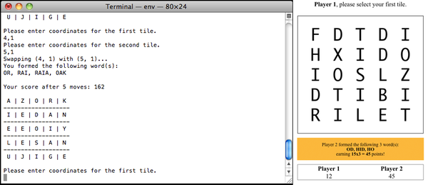

{% include JB/setup %}
{% raw %}
<div>

<h2 id="sec.5x5" class="calibre13">About the Example Project: 5x5</h2>
<table class="figure" id="fig.compare5x5">
<tr class="calibre8">
<td class="calibre10">

</td>
</tr>
<tr class="calibre8">
<td class="calibre19">
<hr class="calibre20"/>
<b class="calibre21">Figure 1. In the console and web versions of our project, the game logic code will be the same.</b>
</td>
</tr>
</table>
<p id="N10268" class="calibre5"> The last section of each chapter applies the new concepts to an original word game called 5x5. As its name suggests, 5x5 is played on a grid five tiles wide and five tiles high. Each tile has a random letter placed on it at the start. Then the players take turns swapping letters on the grid, scoring points for all words formed as a result of the swap (potentially, this can be four words at each of the two swapped tiles: one running horizontally, one vertically, and two diagonally—only left-to-right diagonals count). </p>
<p id="N10271" class="calibre5"> Scoring is based on the Scrabble point value of the letters in the formed words, with a multiplier for the number of distinct words formed. So, at the upper limit, if eight words are formed in one move, then the point value of each is multiplied by eight. Words that have already been used in the game don’t count. </p>
<p id="N10274" class="calibre5"> We’ll build a command-line version of the game in Chapters 2--4, then move it to the browser in Chapter 5, <a href="f_0045.html#chp.jquery">​<em class="emph">Web Interactivity with jQuery</em>​</a>, and finally add multiplayer capability in Chapter 6, <a href="f_0053.html#chp.nodejs">​<em class="emph">Server-Side Apps with Node.js</em>​</a>. Moving the code from the command line to the browser to the server will be super-easy—they all speak the same language! </p>
<script src="scripts/book_local.js" type="text/javascript" class="calibre2"/>
</div>

{% endraw %}

